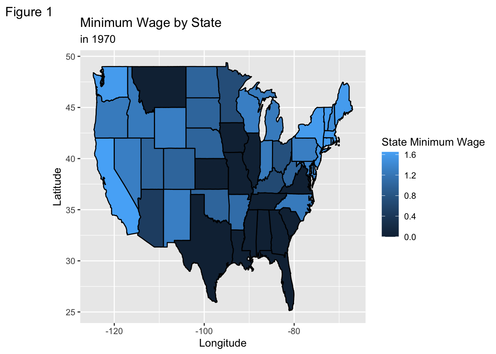
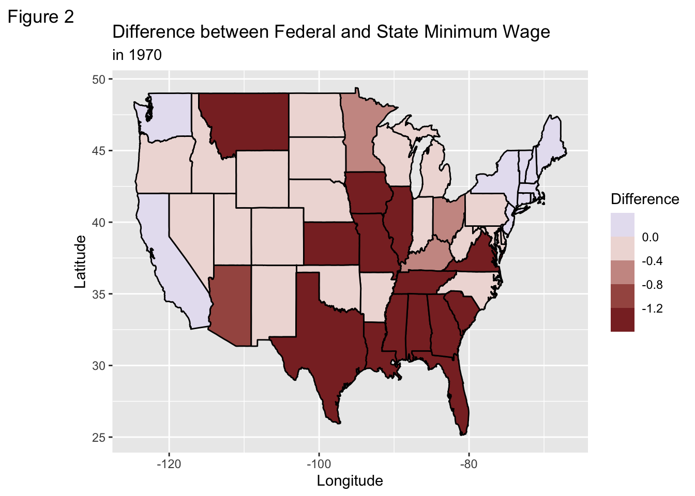
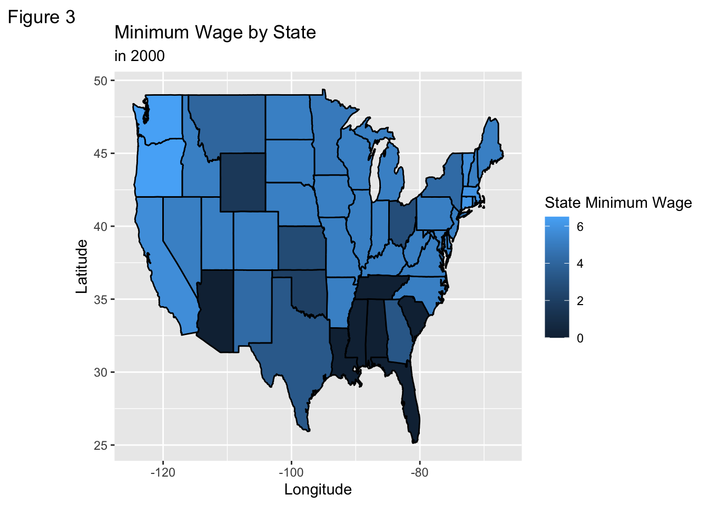
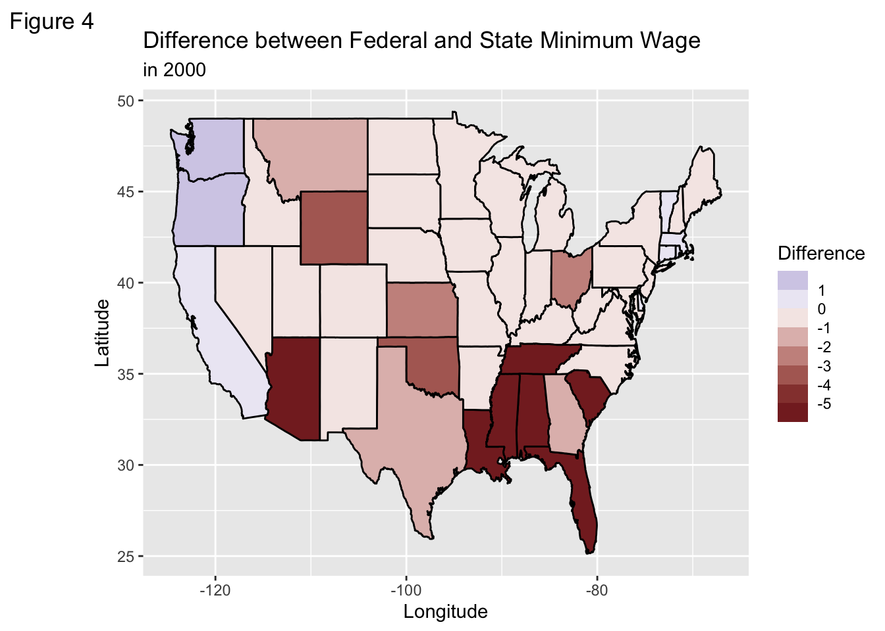
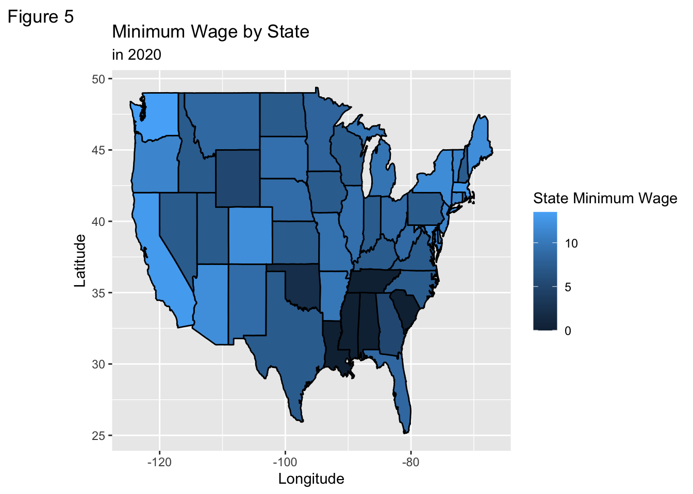
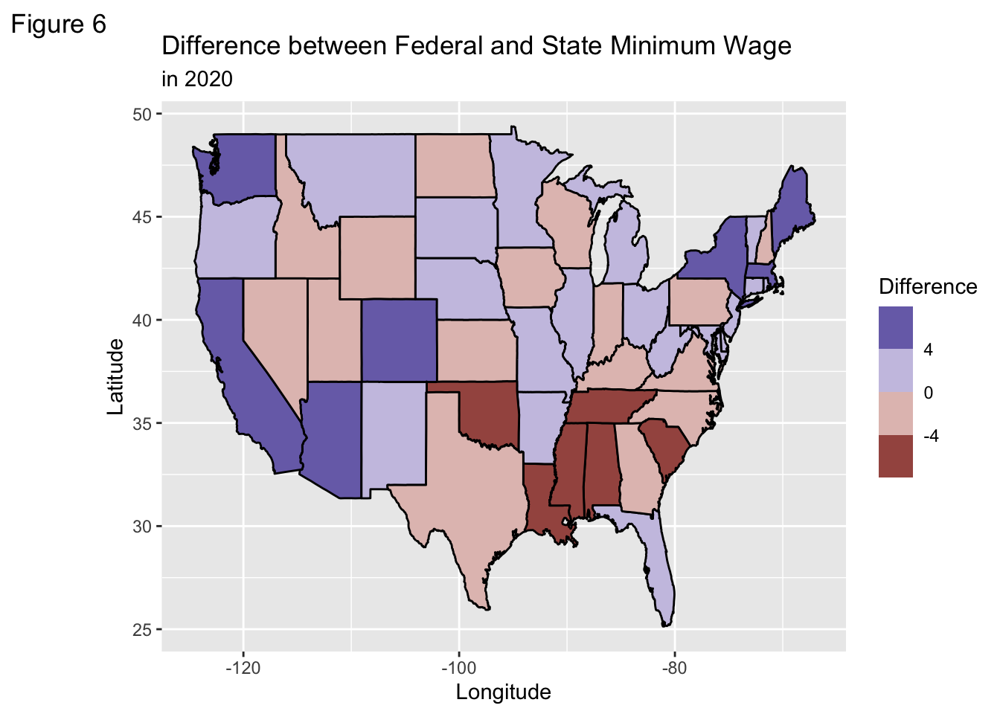

I wanted to explore how the minimum wage across the United States change with time. Here, I am exploring the years of 1970, 2000 and 2020. I chose the years of 1970, 2000, and 2020 because I wanted to learn more about how the minimum wage changed as the cost of living gradually increased. The amount individuals get paid hourly affects their quality of life. To ensure that individuals experience a minimum quality of life, the federal government sets a minimum threshold of how much workers should get paid hourly. We begin by creating three datasets, minimum_wage_1970, minimum_wage_200 and minimum_wage_2020, each dataset corresponding to the year that we are interested in exploring.
library(maps)library(tidyverse)
── Attaching core tidyverse packages ──────────────────────── tidyverse 2.0.0 ──
✔ dplyr 1.1.4 ✔ readr 2.1.5
✔ forcats 1.0.0 ✔ stringr 1.5.1
✔ ggplot2 3.4.4 ✔ tibble 3.2.1
✔ lubridate 1.9.3 ✔ tidyr 1.3.1
✔ purrr 1.0.2
── Conflicts ────────────────────────────────────────── tidyverse_conflicts() ──
✖ dplyr::filter() masks stats::filter()
✖ dplyr::lag() masks stats::lag()
✖ purrr::map() masks maps::map()
ℹ Use the conflicted package (<http://conflicted.r-lib.org/>) to force all conflicts to become errors
Attaching package: 'gridExtra'
The following object is masked from 'package:dplyr':
combine
library(ggplot2)library(viridis)
Loading required package: viridisLite
Attaching package: 'viridis'
The following object is masked from 'package:maps':
unemp
#first, let us remove the US terriorties minimum_wage <-read_csv("~/Desktop/MSCS_264/mary-w1.github.io/Minimum Wage Data.csv") |>select(-Footnote) |>mutate(State=str_to_lower(State)) |>filter(State !="district of columbia"& State!="puerto rico"& State !="u.s. virgin islands"& State !="guam")
Rows: 2862 Columns: 15
── Column specification ────────────────────────────────────────────────────────
Delimiter: ","
chr (3): State, Department.Of.Labor.Uncleaned.Data, Footnote
dbl (12): Year, State.Minimum.Wage, State.Minimum.Wage.2020.Dollars, Federal...
ℹ Use `spec()` to retrieve the full column specification for this data.
ℹ Specify the column types or set `show_col_types = FALSE` to quiet this message.
As I analyzed the dataset more thoroughly, I was curious about how the state minimum wage differed from the federal minimum wage. We must first calculate the difference between the federal minimum wage and the state minimum wage. By doing so, we can which states are not paying their workers enough based on the federal minimum wage.
Now, we have to join the minimum_wage dataset to the us_states dataset in order to analyze the minimum wage for each state. In addition, since we are interested in the difference between the federal and state minimum wage, we must create a new table, fed_minimumWage_, which we must also join into the us_states dataset.
First, let us create the new tables: the minimum wage across the United States, and the difference between the federal and state minimum wage, for the year 1970.
min_wage_1970 <- minimum_wage_1970 |>right_join(us_states, by =c("State"="region")) fed_minimum_wage_1970 <- minimum_wage_1970 |>filter(Year ==1970) |>right_join(us_states, by =c("State"="region")) |>mutate(wage_difference_1970 = State.Minimum.Wage - Federal.Minimum.Wage)
Let us do the same thing for the year 2000
min_wage_2000 <- minimum_wage_2000 |>right_join(us_states, by =c("State"="region")) fed_minimum_wage_2000 <- minimum_wage_2000 |>filter(Year ==2000) |>right_join(us_states, by =c("State"="region")) |>mutate(wage_difference_2000 = State.Minimum.Wage - Federal.Minimum.Wage)
And again for the year 2020
min_wage_2020 <- minimum_wage_2020 |>right_join(us_states, by =c("State"="region"))fed_minimum_wage_2020 <- minimum_wage_2020 |>filter(Year ==2020) |>right_join(us_states, by =c("State"="region")) |>mutate(wage_difference_2020 = State.Minimum.Wage - Federal.Minimum.Wage)
Now that we have joined our two datasets together, let us now graph both the minimum wage of 1970 and the difference between federal and state minimum wage.
min_wage_1970 |>ggplot(mapping =aes(x = long, y = lat,group = group)) +geom_polygon(aes(fill = State.Minimum.Wage), color ="black") +labs(fill ="State Minimum Wage",title ="Minimum Wage by State",subtitle ="in 1970",x ="Longitude", y ="Latitude", tag ="Figure 1")

fed_minimum_wage_1970 |>ggplot(mapping =aes(x = long, y = lat,group = group)) +geom_polygon(aes(fill = wage_difference_1970), color ="black") +labs(fill ="Difference",title ="Difference between Federal and State Minimum Wage",subtitle ="in 1970",x ="Longitude", y ="Latitude", tag ="Figure 2") +scale_fill_steps2()

In Figure 1, we can see the majority of the South, and a couple of the states in the Midwest resion has a minimum wage of zero dollars. Montana is the only state in the Western region that also has a minimum wage of 0 dollars. Not surprisingly, Washington, California, New York, and the majority of the states in the upper East Coast region has the highest minimum wage. Although this is important information, I am more interested in knowing the difference between the state and federal minimum wage.
Figure 2 illustrates the difference between Federal and State Minimum Wage. Again, we can see that there is a huge difference between what the state is paying their workers, and what the federal minimum wage requires them to pay. The states in the Southen region are being underpaid, if they are even being paid for their labor. The numbers in both Figure 1 and Figure 2 seem the same.
After analyzing the data for the year 1970, I was interested in seeing how the minimum wages changed as the cost of living increased.
Again, lets analyze minimum wage of 2000 and the difference between state and federal minimum wage.
min_wage_2000 |>ggplot(mapping =aes(x = long, y = lat,group = group)) +geom_polygon(aes(fill = State.Minimum.Wage), color ="black") +labs(fill ="State Minimum Wage",title ="Minimum Wage by State",subtitle ="in 2000",x ="Longitude", y ="Latitude", tag ="Figure 3")

fed_minimum_wage_2000 |>ggplot(mapping =aes(x = long, y = lat,group = group)) +geom_polygon(aes(fill = wage_difference_2000), color ="black") +labs(fill ="Difference",title ="Difference between Federal and State Minimum Wage",subtitle ="in 2000",x ="Longitude", y ="Latitude", tag ="Figure 4") +scale_fill_steps2()

Figure 3 depicts the minimum wage across the United States in 2000. Notice there has been significant changes since 1970; however, the Southern states of: Florida, South Carolina, Louisiana, Mississippi, Alabama and Tennessee still has a minimum wage of zero dollars. What was really surprising to me was that Arizona now has a state minimum wage of 0 dollars as well. Besides the states that was just mentioned, every state has increased their minimum wage in regards to what they believe was the minimum threshold to have a quality of life.
Figure 4 depicts the difference between the federal and state minimum wage. A darker red shade represents a bigger negative difference between federal and state minimum wage. This indicates workers in that particular state are being underpaid according to what the federal government believes workers should be paid to have a minimum quality of life.
Again, lets analyze minimum wage of 2020 and the difference between state and federal minimum wage.
min_wage_2020 |>ggplot(mapping =aes(x = long, y = lat,group = group)) +geom_polygon(aes(fill = State.Minimum.Wage), color ="black") +labs(fill ="State Minimum Wage",title ="Minimum Wage by State",subtitle ="in 2020",x ="Longitude", y ="Latitude", tag ="Figure 5")

fed_minimum_wage_2020 |>ggplot(mapping =aes(x = long, y = lat,group = group)) +geom_polygon(aes(fill = wage_difference_2020), color ="black") +labs(fill ="Difference",title ="Difference between Federal and State Minimum Wage",subtitle ="in 2020",x ="Longitude", y ="Latitude", tag ="Figure 6") +scale_fill_steps2()

Figure 5 again depicts the state minimum wage across the United States, this time for the year of 2020. What is super surprising to me is that there are still certain states in the South that are not paying their workers a livable wage. The states of California, Washington, and the upper East Coast states are continually increasing their minimum wage to match what they believe will allow their residents to have a minimum quality of life. Notice how the states of Florida and Georgia have slightly increased their minimum wage, but certainly not enough where their residents and workers are able to have a quality of life. Figure 6 depicts the difference between the federal minimum wage and the federal minimum wage. Again, the majority of states in the Southern region are underpaying their workers. Even though there is a federal minimum, those particular states are not matching it. This affects the quality of life of the residents who reside in those states. There seems to be a half and half split of whether or not states are paying their workers a livable wage. The purple shades indicates particular states where they are paying their workers above the federal minimum wage. While the states shaded in red indicate that those states are under paying their workers.
##Conclusion
Although the minimum wage increased throughout the years in response to the minimum quality of life threshold; we have to realize that just because workers are being paid minimum wage that does not mean they have a decent quality of life. There are certain states where individuals are still not being paid enough.
maybe have a better concluding sentence here? it seems to just end so suddenly. do i want to talk about the being under the poverty line , ?